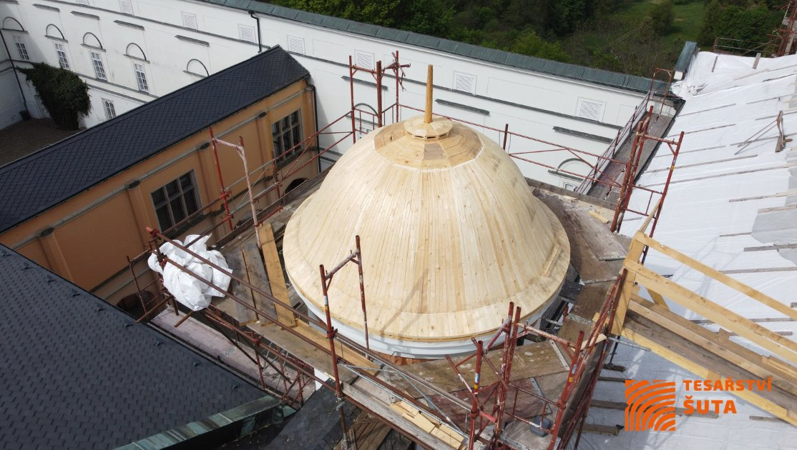
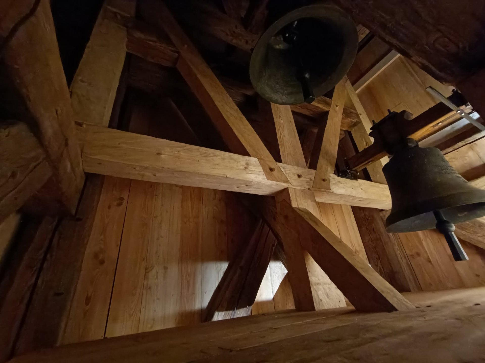

Tesařství Šuta
Řemeslná práce od roku 2008. Stavíme krovy, střechy, pergoly a dřevěné konstrukce s důrazem na kvalitu.


O firmě
Řemeslo, na které se dá spolehnout
Tesařině se věnujeme od roku 2008. Jsme rodinná firma z Francovy Lhoty. Stavíme střechy na rodinných domech i historických budovách a věnujeme se také náročným tesařským konstrukcím a rekonstrukcím památkových objektů. Mezi naše nejzajímavější realizace patří zámek Lysice, zámek Hradec nad Moravicí, zámek Kunerad na Slovensku nebo kostel sv. Víta v Českém Krumlově. Za největší odměnu považujeme možnost podílet se na zachování staveb, které tu stojí desítky či stovky let. Ke každé zakázce přistupujeme s respektem k řemeslu, materiálu i představám zákazníka.
Co děláme
Služby
Naše práce
Realizace


Kvalita a záruky
Certifikáty a osvědčení
Pronájem lešení a techniky
Nabízíme pronájem kvalitního vybavení pro stavební práce. Pronájem lešení je možné zajistit i včetně montáže a demontáže přímo u vás na místě.
Časté dotazy
FAQ
Poptávku vyřídíme telefonicky nebo e-mailem, domluvíme si prohlídku přímo na místě a připravíme nezávaznou cenovou nabídku na míru vašemu projektu. Cena se vždy odvíjí od rozsahu prací a použitého materiálu.
Záleží na rozsahu prací - menší opravy zvládneme v řádu dní, rekonstrukce střechy nebo krovu obvykle několik týdnů. Konkrétní termín vždy domluvíme předem a o případných změnách (např. kvůli počasí) vás včas informujeme.
Ano, na provedené dílo poskytujeme zákonnou záruku, u staveb 5 let od předání. Podrobnosti a postup reklamace najdete v Reklamačním řádu.
Ano, tesařské a pokrývačské práce realizujeme po celé České republice.
Ano, lešení UNI 70 si můžete pronajmout i bez návaznosti na naše tesařské či pokrývačské práce.
Ano, rekonstrukce historických staveb, kostelů a památkově chráněných objektů patří mezi naše specializace - najdete je i mezi referencemi.
Spojte se s námi
Kontakt
Máte v plánu opravu střechy nebo tesařskou zakázku? Ozvěte se nám, poradíme a připravíme nabídku na míru.